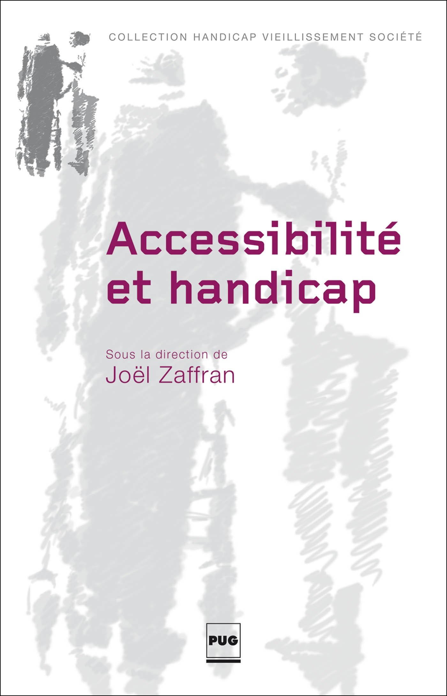
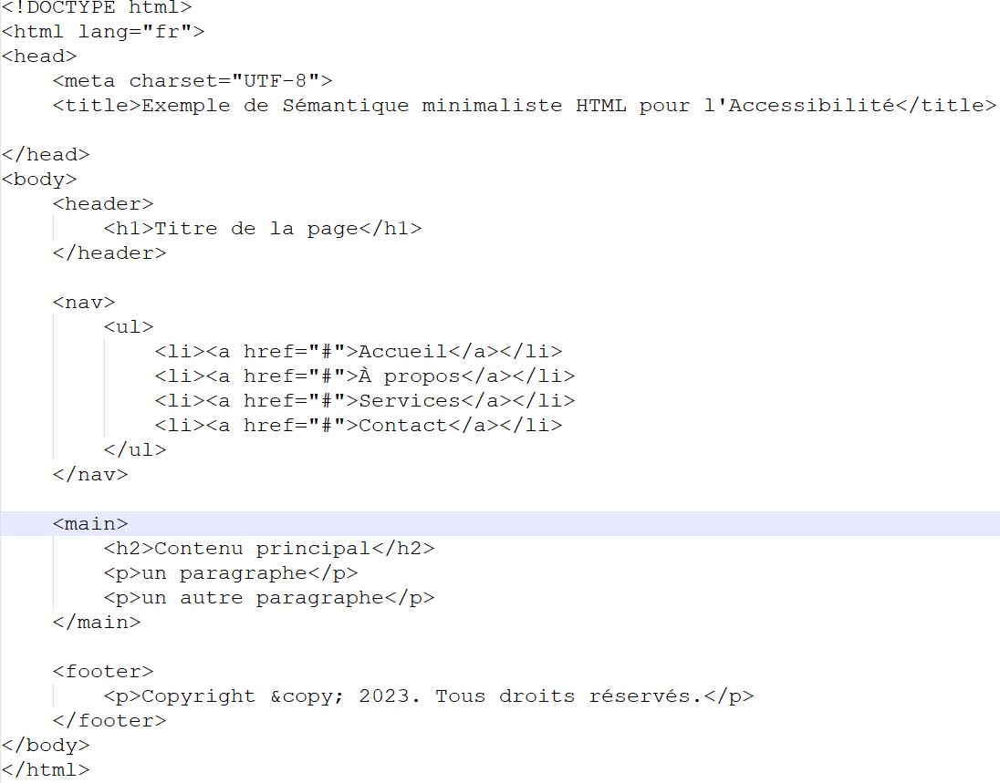
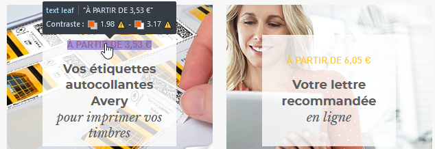
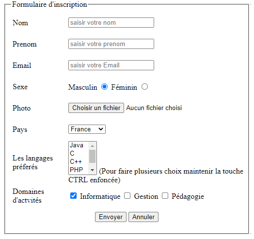

Comment réaliser un audit d'accessibilité de votre site web ?
ARA vous propose une méthodologie pour réaliser 3 types d'audit
- Rapide (25 critères du RGAA)
- Complémentaire (50 critères du RGAA)
- Complet dit de conformité (106 critères du RGAA)
Utiliser des attributs "alt" vides ou nuls pour les images purement décoratives afin d'éviter qu'elles soient lues par les technologies d'assistance.
Utiliser des descriptions appropriées dans les attributs "alt" pour les images informatives afin de fournir des informations équivalentes pour les utilisateurs qui ne peuvent pas voir les images. Les attributs title et aria-describedby ne sont pas indispensables !
Utiliser des balises HTML sémantiques appropriées (telles que <header>, <nav>, <main>, <section>, <article>, <aside>, <footer>) pour améliorer la structure et la compréhension du contenu par les technologies d'assistance.
Purement démonstratif, cette image affiche une page HTML avec les balises habituelles qui permettent de structurer le code de la page.
<!DOCTYPE html>
<html lang="fr">
<head>
<meta charset="UTF-8">
<title>Exemple de Sémantique minimaliste HTML pour l'Accessibilité</title>
</head>
<body>
<header>
<h1>Titre de la page</h1>
</header>
<nav>
<ul>
<li> <a href="#">Accueil</a> </li>
<li> <a href="#">À propos</a> </li>
<li> <a href="#">Services</a> </li>
<li> <a href="#">Contact</a> </li>
</ul>
</nav>
<main>
<h2>Contenu principal </h2>
<p>un paragraphe </p>
<p>un autre paragraphe </p>
</main>
<footer>
<p>Copyright © 2023. Tous droits réservés. </p>
</footer>
</body>
</html>
S'assurer que toutes les fonctionnalités du site sont accessibles via le clavier pour les utilisateurs qui ne peuvent pas utiliser la souris.
Utiliser des combinaisons de couleurs offrant un contraste suffisant pour rendre le contenu lisible pour les personnes atteintes de déficience visuelle.
Utiliser des balises HTML sémantiques pour les formulaires (telles que <form>, <input>, <label>, <select>, <textarea>, etc...) pour améliorer l'accessibilité et la compréhension du contenu par les technologies d'assistance.
ARA vous propose une méthodologie pour réaliser 3 types d'audit